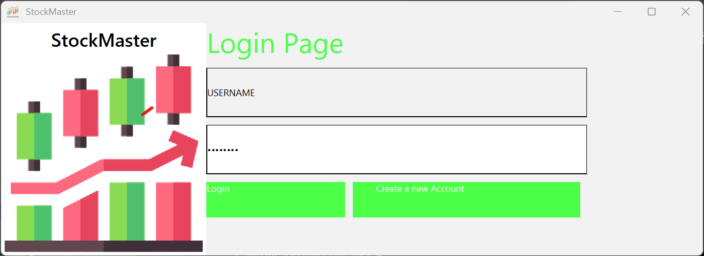
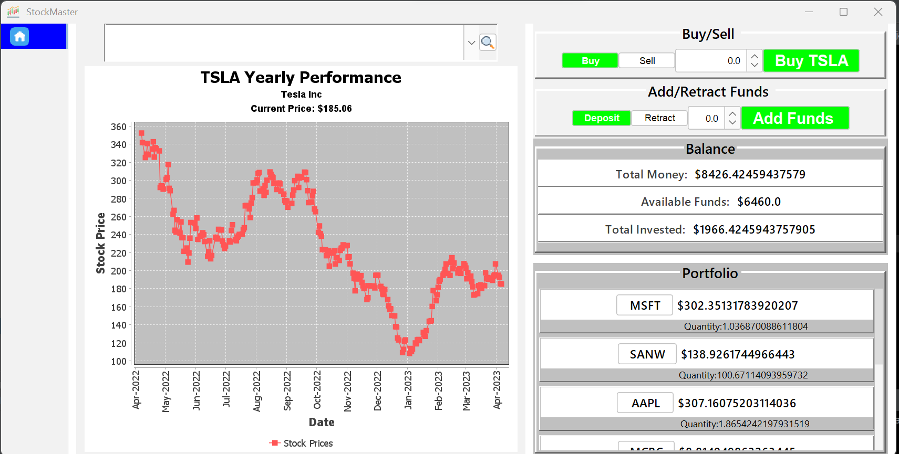

This is my first big Java project. It is a GUI program with Java and Swing framework that emulates the stock market and allows users to buy or sell ~1000 stocks of their choice. It uses a SQL database for login and user authentification purposes as well as keeping track of user's balances and stock inventory.
The app support operations such as buying/selling stocks, depositing and retracting funds(not real funds).The app allow user to research stocks and provide the current price as well as a graph(using the JfreeChart library ) made of the historical data from up to 1Year. The app use the Jsoup library to parse through the HTML link from the google finance website. To do this I built a Web-Scrapper and used the JSoup library to automatically fetch and assemble real time data of the stock prices from the Google Finance website every 5 seconds
